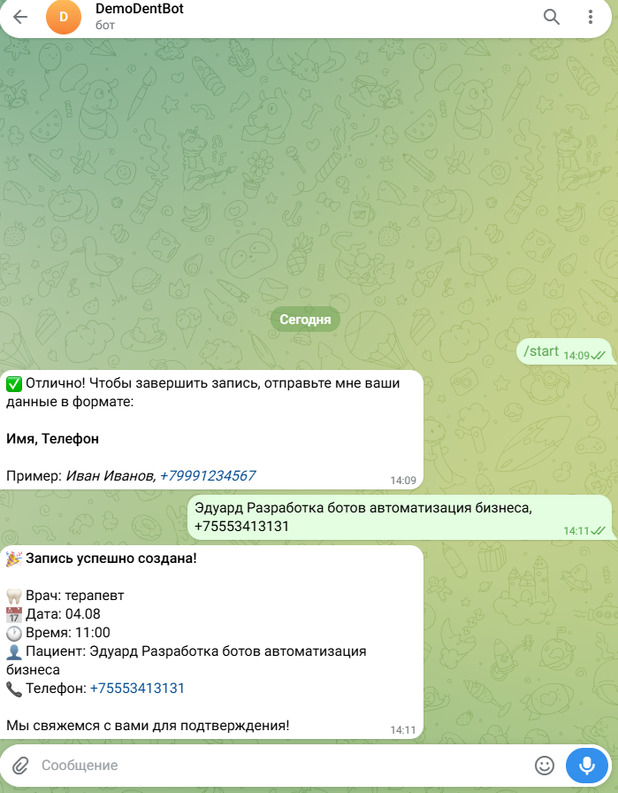
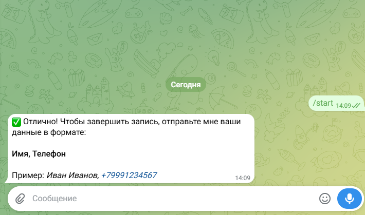
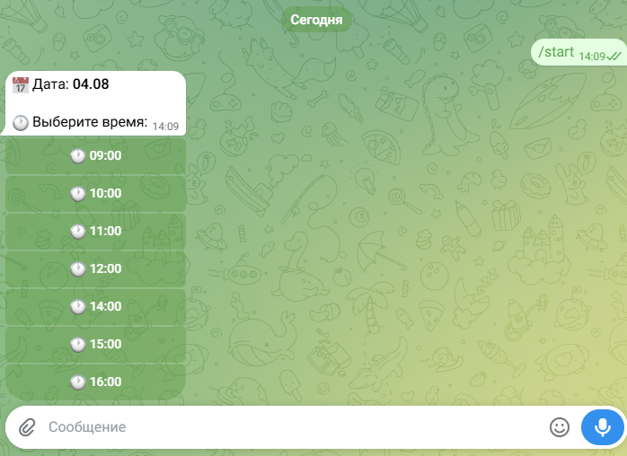
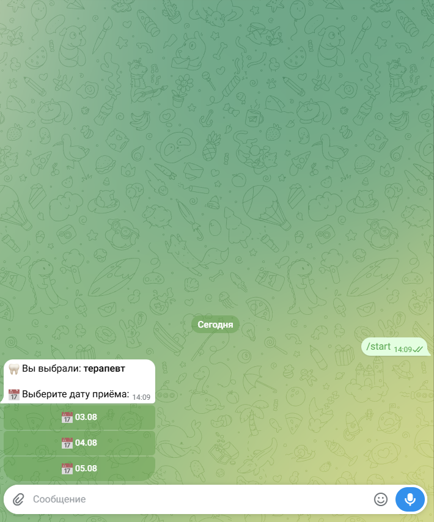

Демо-версия бота для стоматологической клиники
DemoDentBot — это демонстрация того, как можно организовать запись пациентов к врачу через Telegram без сложных CRM-систем.
Сценарий для пациента: Пациент нажимает «Записаться» → выбирает врача (терапевт, ортодонт, хирург) → выбирает дату и время → вводит имя и телефон → получает подтверждение записи.
Технически: Бот работает на связке Python + Flask + Telegram Bot API. Все записи сохраняются в базу данных SQLite. Веб-хуки обеспечивают мгновенный отклик.



